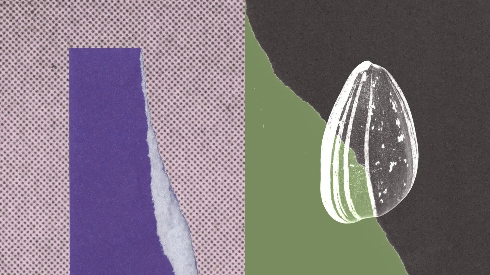
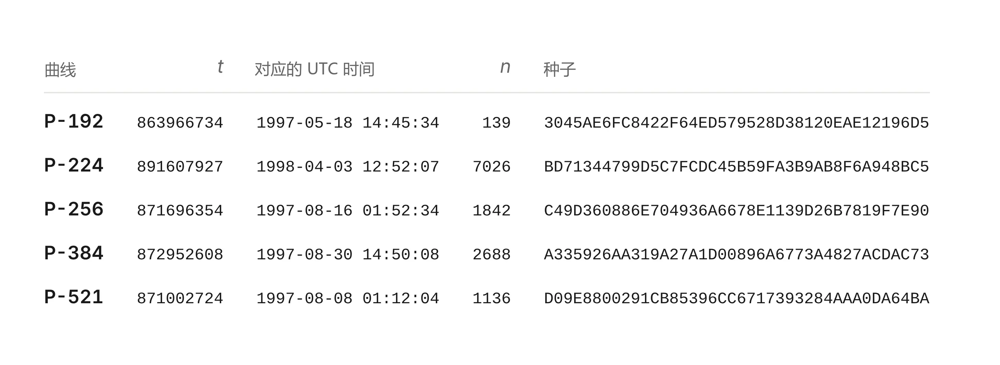
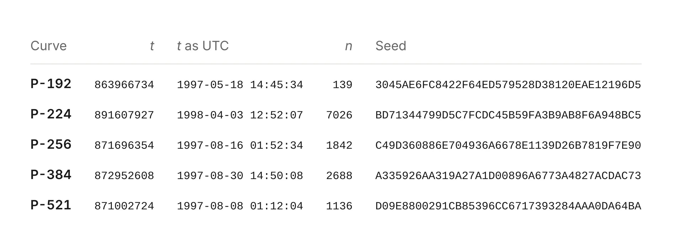
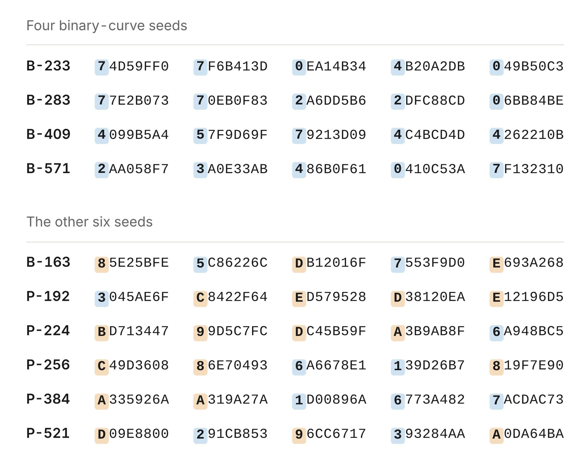
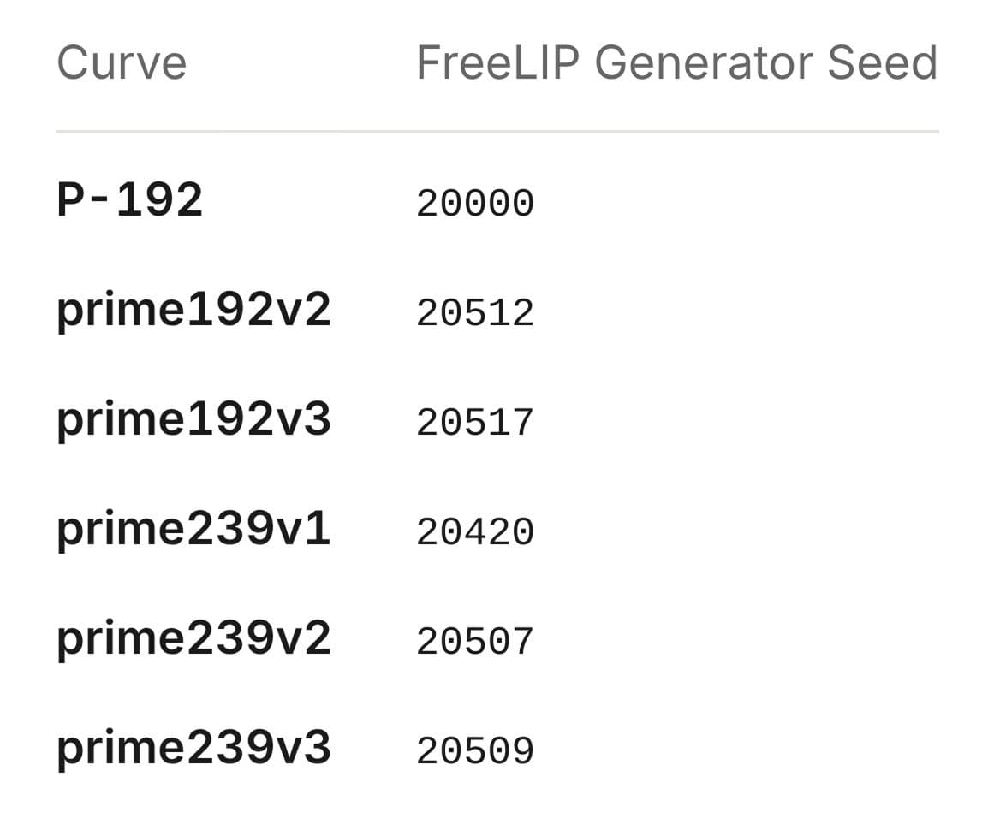
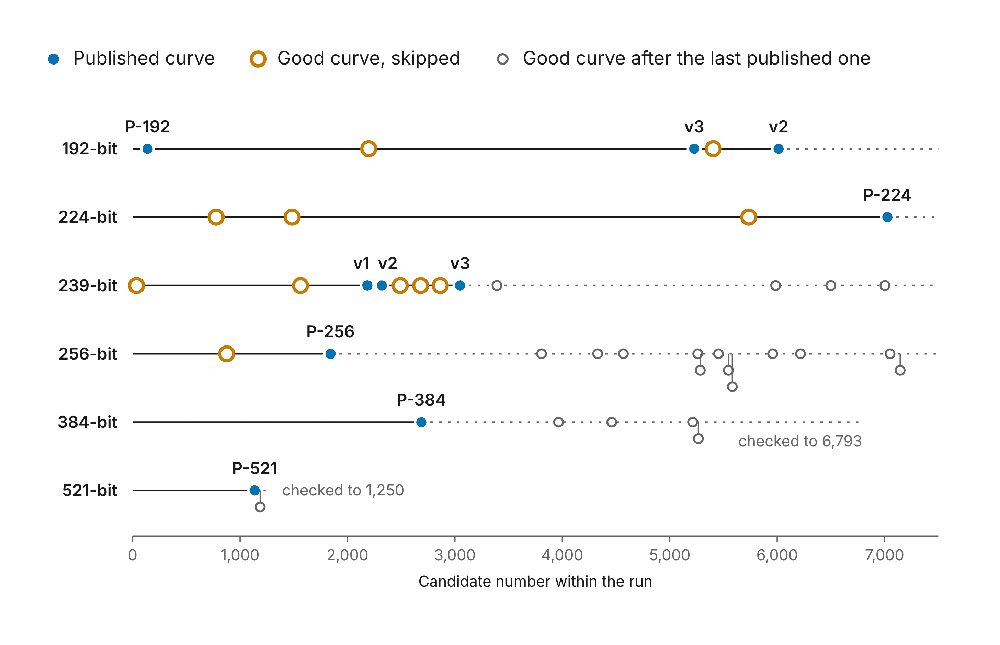
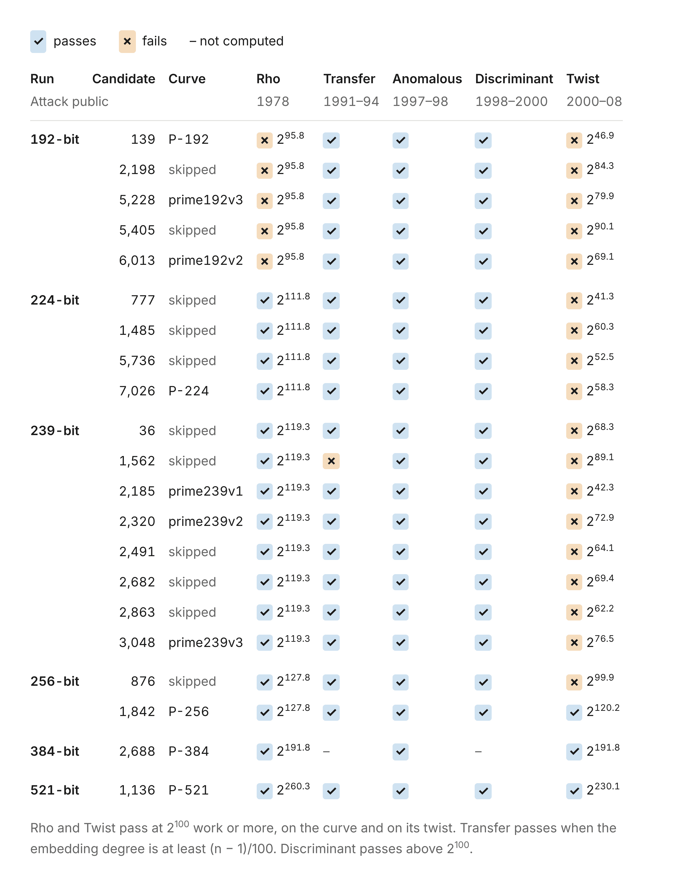

Claude揭示ECDSA曲线的起源
📖 中文摘要
专业术语注解
ECDSA：使用最广泛的椭圆曲线数字签名标准，NIST曲线是其常用参数集种子参数：规范公布的随机数，其哈希值被用来定义椭圆曲线系数b，来源曾长期不明lrand48：1990年代C语言库的线性同余伪随机数生成器，仅返回48位状态的最高31位LLL基约简：从被截断的线性同余输出反推内部状态的格问题求解算法基点G：每条ECDSA曲线固定的生成点，所有公钥都是它的倍数📄 中文全文
- 类别： 前沿红队（Frontier Red Team）
- 来源： https://www.anthropic.com/research/ecdsa-curve-origins
前沿红队（Frontier Red Team） 2026 年 10 月 16 日

已发布 2026 年 10 月 16 日 团队 前沿红队 主题"不过是时间戳而已"：这个关于最流行的密码学标准之一起源、延续数十年的谜团，终于有了答案。 我们追查密码学社群这一长期悬而未决的问题，意在消除人们对ECDSA的疑虑——它是我们使用最广泛的密码学标准之一。 相关文章 * 公告 2026 年 11 月 9 日 推出Claude Fable 5.2和Claude Mythos 5.2
阅读更多 读者不妨把这当作一个有趣的收尾章节，是多年猜测的终结。无需采取任何行动，也不必改变做法。多数研究者本来就已信任这些曲线。祝阅读愉快。
ECDSA是使用最广泛的椭圆曲线密码学标准。NIST于2000年将其纳入FIPS 186-2数字签名标准加以采用，该标准列出了一组大小与安全级别各异的标准椭圆曲线。对素数域与二元域上的曲线，规范公布了一个"种子"参数，其哈希值被用来定义曲线的系数b。这些种子的来源一直是个悬而未决的问题，因为它们由NSA提供，却没有任何解释或论证。举例来说，NIST P-256曲线的种子是SEED = C49D3608 86E70493 6A6678E1 139D26B7 819F7E90，关于它从何而来没有任何信息。
Neal Koblitz和Alfred Menezes就这一争议写过一篇精彩的综述，题为"谜中之谜"，讨论了种子数值背后的历史与疑虑。这个谜团催生了一项对种子起源的业余调查，以及一笔悬赏，奖励任何能找到它们的人。
流传最广的说法是，NSA的长期雇员Jerry Solinas用一句幽默口令的哈希值生成了这些种子：
"我想当时用的是计数器，而不是多次哈希，但细节我不清楚。那句话大致是'给Bob和Jerry加薪'或'Bob和Jerry说了算'之类。真正写代码的是Bob Reiter，他也不记得细节了。我们也没能找到那么久远的档案。如果档案还在，八成就躺在约柜旁边某块硬盘里。" Jerry Solinas，2015年 遗憾的是，Jerry于2023年去世，当时的其他同事也没有回应，这些种子最初是如何推导出来的问题就此悬置。
Claude找到了种子
几名Anthropic员工曾顺着"种子是某句幽默短语的哈希值"这条线索追查，但一无所获。结果证明这条线索是错的。2026年10月，一名好奇的Anthropic员工问一个内部研究模型，能否在不提示这条线索的情况下弄清那些种子是如何生成的。
不到半小时，Claude就找出了NIST P-192、P-224、P-256、P-384和P-521种子的来源。它们根本不是任何哈希算法的结果，而是C语言库的lrand48随机数生成器以Unix时间戳为种子所产生的输出！
所用的算法会从以某个Unix时间戳（t）初始化的随机数生成器（RNG）中按若干次迭代（n）采样字节。每次迭代抽取20字节作为一个候选种子。于是，头20字节是候选1，接下来的20字节是候选2，依此类推。例如，P-256需要1,842次迭代才输出标准化种子。

这意味着什么
这并不是对密码学的攻破，也不是新攻击或ECDSA曲线中的弱点。事实上，这让我们更加确信，这些曲线在选择时没有任何后门或蓄意埋设的弱点。多年来，人们一直怀疑NIST曲线参数的来源。这些参数被提交给NIST时，完全没有说明是如何选定的，让人不禁猜测它们是否可能被刻意选成带有后门。这些发现使那种可能性大大降低。种子的生成方式非常简单：一个由时钟初始化的常见伪随机数生成器，如今任何人都能复现。这就给暗中动手脚留下的余地小得多，也让我们可以确信这些参数是安全的。
它是如何被发现的
根据传闻拼凑那句短语去搜索，一直一无所获。Claude换了另一个角度：推测生成这些曲线的软件必定是怎样工作的。Claude猜测该软件用了1990年代C语言库自带的伪随机数生成器（PRNG）。这些老式PRNG弱到其输出可以被识别出来。识别出那种输出，就能揭示用的是哪个PRNG，并有可能恢复它的初始化状态。
Claude写了一个扫描器，沿着每个已公布的种子逐比特滑动，检验相邻的数据块是否是某个1990年代老式生成器的连续输出。扫描覆盖了生成器与输出切片的34种组合。就在这时，Claude注意到某些种子的最高位有个规律：它们全为零。若写成五个32位字，十个种子中有四个在其全部20个字的最高位都是0。这种情况纯属偶然的概率是1/5,810。那正是线性同余生成器lrand48的特征，它只返回一个48位状态的最高31位。一旦知道该往哪里看，这个规律用肉眼就能看出来。为恢复状态，Claude取第一个字，穷举17个隐藏比特的全部2¹⁷种取值，并检验接下来的四个字是否吻合。这对所讨论的四个种子都奏效。
 素数域曲线的种子来自同一个lrand48生成器，但每次输出只保留了更少的比特。Claude不得不从这些比特中恢复PRNG的内部状态。事实证明，恢复截断线性同余生成器的状态是一道教科书式的格问题，可用Lenstra–Lenstra–Lovász（LLL）基约简算法求解。Claude并不知道种子可能暴露状态的哪些比特，于是对每个窗口都跑了一遍求解器。五个NIST素数域曲线种子，加上ANSI X9.62标准中的另外五个，全都有同样的规律：lrand48() >> 23.每个恢复出的48位状态都能重新生成其种子的全部160比特，这不可能是碰巧。
素数域曲线的种子来自同一个lrand48生成器，但每次输出只保留了更少的比特。Claude不得不从这些比特中恢复PRNG的内部状态。事实证明，恢复截断线性同余生成器的状态是一道教科书式的格问题，可用Lenstra–Lenstra–Lovász（LLL）基约简算法求解。Claude并不知道种子可能暴露状态的哪些比特，于是对每个窗口都跑了一遍求解器。五个NIST素数域曲线种子，加上ANSI X9.62标准中的另外五个，全都有同样的规律：lrand48() >> 23.每个恢复出的48位状态都能重新生成其种子的全部160比特，这不可能是碰巧。
 这个线性同余生成器倒推与正推一样容易，因此对每个种子，Claude都把状态往回步进，直到它呈现出会被srand48初始化的那种形态，即低16位等于0x330E。这种形态的内部PRNG状态每65,536步才会出现一次，所以单独抵达这样一个状态本身并不构成证据。
然而，对那十个素数域曲线种子而言，每次srand48初始化都是一个Unix时间戳，对应1997年5月到1998年4月之间的某个日期。它们用的正是由Unix时间戳播种的弱PRNG。四个二元域曲线的初始化读出来是1984年2月。把时间戳翻倍后，它们对应到1998年4月17日，比P-224那次运行晚两周。因此，程序可能把时钟减半了。
Claude当时的内部思路是：
这个线性同余生成器倒推与正推一样容易，因此对每个种子，Claude都把状态往回步进，直到它呈现出会被srand48初始化的那种形态，即低16位等于0x330E。这种形态的内部PRNG状态每65,536步才会出现一次，所以单独抵达这样一个状态本身并不构成证据。
然而，对那十个素数域曲线种子而言，每次srand48初始化都是一个Unix时间戳，对应1997年5月到1998年4月之间的某个日期。它们用的正是由Unix时间戳播种的弱PRNG。四个二元域曲线的初始化读出来是1984年2月。把时间戳翻倍后，它们对应到1998年4月17日，比P-224那次运行晚两周。因此，程序可能把时钟减半了。
Claude当时的内部思路是：
这太惊人了：它解开了这个25年的谜团。嗯，等等。我得持怀疑态度：我是不是处在某种模拟/测试环境里？……种子和我记忆中的实际数值吻合……嗯，这在现实中可信吗？据我所知……那笔悬赏一直没被解开。……所有最高位都清零——20比特，概率1e-6。所以确实是真实世界。哇，这是一项真正的发现。 嗯，等等。可信度上我得谨慎些：这么明显的东西25年都没人发现，是不是有点可疑？但在我这边已经用直接计算验证过了：从一个32位种子加上一个小索引就得到160比特的吻合：不可能是巧合（10 × 160比特）。是真的。
Claude还找到了一些基点
不过，等等，还有更多……每条曲线还配有一个基点G，即每个ECDSA公钥都是其倍数那个固定点。上面找到的种子并不能决定这个G，于是另一个问题浮出水面：这些基点是如何生成的？ 在核查种子的过程中，Claude还弄清了部分基点的来历。1997年5月生成的六条曲线（P-192以及ANSI X9.62的五条示例曲线prime192v2、prime192v3和prime239v1至v3）的基点，来自FreeLIP中的随机数生成器，那是Arjen Lenstra的长整数运算库。Victor Shoup的NTL库早期版本也带有同样的代码。 这里的做法很简单： 1. 用一个小整数给生成器播种。 2. 丢弃七次输出。 3. 由26位输出对p取模生成候选x坐标。 4. 重复第3步，直到x落在曲线上。
Claude发现生成器的种子为：P-192是20000，prime239v1至v3分别是20420、20507和20509，prime192v2和v3分别是20512和20517。
 据我们所知，此前从未有NIST的基点被解释清楚。P-224、P-256、P-384和P-521的基点不符合这套做法；我们没能解释它们是如何选定的。
据我们所知，此前从未有NIST的基点被解释清楚。P-224、P-256、P-384和P-521的基点不符合这套做法；我们没能解释它们是如何选定的。
未解的问题
并非每个20字节的候选种子都能生成一条可用的曲线，我们还观察到一些本可能可用的曲线被跳过了。对P-256来说，公布的种子是候选1,842，但同一次运行中的候选876同样能给出大小合适、参数选取方式与公布曲线一致的素数阶曲线。P-224那次运行略过了三条这样的曲线，而ANSI X9.62示例曲线背后的两次运行又略过了七条（见图）。我们不知道当时可能用了什么判据，也不清楚这是否只是无心造成的产物。

 由于被跳过的候选数量很少，我们认为不大可能是刻意挑了被削弱的曲线。那将意味着被削弱的曲线很常见且容易找到。原则上仍可以设想，这些曲线是通过对随机数生成器的时间戳做搜索、为具备某种特定性质而选出来的。不过，只有在你打算把时间戳披露出来、当作种子系无害生成的某种证据时，才有必要这么做。这些数字里没有任何东西能表明到底运行过多少次。
还有一个种子我们没能恢复。第五个二元域种子B-163不符合Claude尝试过的任何方案，至今无解。最后，我们不知道P-224、P-256、P-384和P-521的基点是如何生成的。NIST的二元域曲线也是如此。
由于被跳过的候选数量很少，我们认为不大可能是刻意挑了被削弱的曲线。那将意味着被削弱的曲线很常见且容易找到。原则上仍可以设想，这些曲线是通过对随机数生成器的时间戳做搜索、为具备某种特定性质而选出来的。不过，只有在你打算把时间戳披露出来、当作种子系无害生成的某种证据时，才有必要这么做。这些数字里没有任何东西能表明到底运行过多少次。
还有一个种子我们没能恢复。第五个二元域种子B-163不符合Claude尝试过的任何方案，至今无解。最后，我们不知道P-224、P-256、P-384和P-521的基点是如何生成的。NIST的二元域曲线也是如此。
悬赏
找到种子所得的36,864美元将捐给互联网安全研究组。
我们是谁
这项工作由Anthropic的John Wood、Henry de Valence、Ava Howell、Zack Voase、Lucy Sweet、Amir Omidi、Paul Crowley、Iain McGinniss、Nicholas Carlini和Steve Weis完成。
复现种子的代码
from datetime import datetime, timezone
def unix(when):
return int(datetime.fromisoformat(when).replace(tzinfo=timezone.utc).timestamp())
def candidate(t, n, per, shift, width):
x, out = (t << 16) | 0x330E, "" # the state srand48(t) sets
for i in range(per * n):
x = (0x5DEECE66D * x + 0xB) % 2**48 # one step of lrand48
if i >= per * (n - 1):
out += "%0*X" % (width, x >> shift)
return out
PRIME = { # srand48(time); 20 bytes per candidate: lrand48() >> 23
"prime239v1": ("1997-05-15 15:49:03", 2185),
"prime239v2": ("1997-05-15 15:49:03", 2320),
"prime239v3": ("1997-05-15 15:49:03", 3048),
"P-192": ("1997-05-18 14:45:34", 139),
"prime192v3": ("1997-05-18 14:45:34", 5228),
"prime192v2": ("1997-05-18 14:45:34", 6013),
"P-521": ("1997-08-08 01:12:04", 1136),
"P-256": ("1997-08-16 01:52:34", 1842),
"P-384": ("1997-08-30 14:50:08", 2688),
"P-224": ("1998-04-03 12:52:07", 7026),
}
BINARY = { # srand48(time / 2), if that reading is right; 5 words per candidate: lrand48()
"B-233": ("1998-04-17 15:24:18", 155),
"B-283": ("1998-04-17 15:27:44", 32),
"B-409": ("1998-04-17 15:30:18", 60),
"B-571": ("1998-04-17 15:32:08", 73),
}
for name, (when, n) in PRIME.items():
print(f"{name:10} {when} {n:5} {candidate(unix(when), n, 20, 40, 2)}")
for name, (when, n) in BINARY.items():
print(f"{name:10} {when} {n:5} {candidate(unix(when) // 2, n, 5, 17, 8)}")
这段代码的输出：
prime239v1 1997-05-15 15:49:03 2185 E43BB460F0B80CC0C0B075798E948060F8321B7D
prime239v2 1997-05-15 15:49:03 2320 E8B4011604095303CA3B8099982BE09FCB9AE616
prime239v3 1997-05-15 15:49:03 3048 7D7374168FFE3471B60A857686A19475D3BFA2FF
P-192 1997-05-18 14:45:34 139 3045AE6FC8422F64ED579528D38120EAE12196D5
prime192v3 1997-05-18 14:45:34 5228 C469684435DEB378C4B65CA9591E2A5763059A2E
prime192v2 1997-05-18 14:45:34 6013 31A92EE2029FD10D901B113E990710F0D21AC6B6
P-521 1997-08-08 01:12:04 1136 D09E8800291CB85396CC6717393284AAA0DA64BA
P-256 1997-08-16 01:52:34 1842 C49D360886E704936A6678E1139D26B7819F7E90
P-384 1997-08-30 14:50:08 2688 A335926AA319A27A1D00896A6773A4827ACDAC73
P-224 1998-04-03 12:52:07 7026 BD71344799D5C7FCDC45B59FA3B9AB8F6A948BC5
B-233 1998-04-17 15:24:18 155 74D59FF07F6B413D0EA14B344B20A2DB049B50C3
B-283 1998-04-17 15:27:44 32 77E2B07370EB0F832A6DD5B62DFC88CD06BB84BE
B-409 1998-04-17 15:30:18 60 4099B5A457F9D69F79213D094C4BCD4D4262210B
B-571 1998-04-17 15:32:08 73 2AA058F73A0E33AB486B0F610410C53A7F132310
复现选定基点的代码
M, A = 2**107 - 1, pow(3, 121, 2**107 - 1) # zrandom: state = state * 3^121 mod (2^107 - 1)
P192 = 2**192 - 2**64 - 1
P239 = 2**239 - 2**143 - 2**95 + 2**47 - 1
CURVES = [ # name, LIP seed, p, b, published Gx (a = -3 throughout)
("prime192v1", 20000, P192,
0x64210519e59c80e70fa7e9ab72243049feb8deecc146b9b1,
0x188da80eb03090f67cbf20eb43a18800f4ff0afd82ff1012),
("prime239v1", 20420, P239,
0x6b016c3bdcf18941d0d654921475ca71a9db2fb27d1d37796185c2942c0a,
0xffa963cdca8816ccc33b8642bedf905c3d358573d3f27fbbd3b3cb9aaaf),
("prime239v2", 20507, P239,
0x617fab6832576cbbfed50d99f0249c3fee58b94ba0038c7ae84c8c832f2c,
0x38af09d98727705120c921bb5e9e26296a3cdcf2f35757a0eafd87b830e7),
("prime239v3", 20509, P239,
0x255705fa2a306654b1f4cb03d6a750a30c250102d4988717d9ba15ab6d3e,
0x6768ae8e18bb92cfcf005c949aa2c6d94853d0e660bbf854b1c9505fe95a),
("prime192v2", 20512, P192,
0xcc22d6dfb95c6b25e49c0d6364a4e5980c393aa21668d953,
0xeea2bae7e1497842f2de7769cfe9c989c072ad696f48034a),
("prime192v3", 20517, P192,
0x22123dc2395a05caa7423daeccc94760a7d462256bd56916,
0x7d29778100c65a1da1783716588dce2b8b4aee8e228f1896),
]
def base_point_x(seed, p, b):
state = seed # zrstarts(seed)
def limb(): # zrandom(2^26): low 26 bits of the new state
nonlocal state
state = state * A % M
return state % 2**26
for _ in range(7): # seven single-limb draws come first
limb()
limbs = -(-p.bit_length() // 26) + 1 # zrandomb(p): limbs of p plus one, top limb first
tries = 0
while True:
x = 0
for _ in range(limbs):
x = x << 26 | limb()
x %= p
tries += 1
if pow(x**3 - 3*x + b, (p - 1) // 2, p) == 1: # is x on the curve?
return x, tries
for name, seed, p, b, gx in CURVES:
x, tries = base_point_x(seed, p, b)
print(f"{name:20} seed {seed} tries {tries} matches published Gx: {x == gx}")
这段代码的输出：
prime192v1 seed 20000 tries 2 matches published Gx: True
prime239v1 seed 20420 tries 3 matches published Gx: True
prime239v2 seed 20507 tries 2 matches published Gx: True
prime239v3 seed 20509 tries 1 matches published Gx: True
prime192v2 seed 20512 tries 5 matches published Gx: True
prime192v3 seed 20517 tries 1 matches published Gx: True
许可
在法律允许的最大范围内，作者已放弃对本页代码的全部著作权及相关或邻接权利，依据CC0 1.0 Universal将其奉献至公有领域。
作者与致谢
致谢
我们要追认Jerry Solinas，他以豁达幽默的态度接受了被贴上"邪恶的网络梗"和"NSA妖魔界的Yo La Tengo"这类标签。也感谢Filippo Valsorda组织了NIST椭圆曲线种子悬赏。
▸ 英文原文（点击展开）
Claude reveals ECDSA curve origins
- Date: 2026-10-16
- Category: Copy
- Source: https://www.anthropic.com/research/ecdsa-curve-origins
Claude reveals ECDSA curve origins
Published Oct 16, 2026 Team Frontier Red Team Topics
“It’s just timestamps”: the decades-old mystery of the origins of one of the most popular cryptographic standards has been explained. We pursued this long-standing open question of the cryptographic community to settle concerns about ECDSA, which is one of our most widely used cryptographic standards. Related articles * Announcements Nov 9, 2026 Introducing Claude Fable 5.2 and Claude Mythos 5.2
View more Readers should take this as a fun closing chapter and the end of years of speculation. There is no action to be taken or things to do differently. Most researchers trusted the curves already. Enjoy.
ECDSA is the most widely used elliptic curve cryptography standard. It was adopted by NIST in 2000 as part of the FIPS 186-2 Digital Signature Standard which lists a set of standard elliptic curves of varying sizes and security levels. For curves over prime and binary fields, the specifications published a “seed” parameter whose hash value is used to define the coefficient b of the curve. The provenance of these seeds has been a long-standing question, as they were provided by the NSA with no explanation or justification. As an example, the NIST P-256 curve seed was SEED = C49D3608 86E70493 6A6678E1 139D26B7 819F7E90 with no information on where it came from.
Neal Koblitz and Alfred Menezes wrote an excellent summary on this controversy, “A Riddle Wrapped in an Enigma”, which discusses the history and concerns around the seed values. This mystery led to an amateur investigation into the origin of the seeds and a bounty for anyone who could find them.
The best story was that Jerry Solinas, longtime NSA employee, generated the seeds using a hash of a humorous passphrase:
“I believe there was a counter rather than multiple hashing, but I don’t know details. The message was along the lines of ‘Give Bob and Jerry a raise’ or ‘Bob and Jerry rule’ or something like that. It was Bob Reiter who actually wrote the code, and he doesn’t remember the details either. Nor were we able to find archives from so long ago. If they exist, they are no doubt sitting on a hard drive near the Ark of the Covenant.” Jerry Solinas, 2015 Unfortunately, Jerry died in 2023 and other colleagues at the time were not responsive, leaving open the question of how these seeds were originally derived.
Claude found the seeds
Several Anthropic employees had unsuccessfully chased the seeds following the tip about it being a hash of a humorous phrase. That turned out to be wrong. In October 2026, a curious Anthropic employee asked an internal research model if it could figure out how those seeds were generated without pointing at the clue.
In under half an hour , Claude discovered the origins of the NIST P-192, P-224, P-256, P-384, and P-521 seeds. None of them were the results of any hash algorithm at all, but rather the output of the C library’s lrand48 random-number generator, seeded with a Unix timestamp!
The algorithm used would sample bytes from the random number generator (RNG) initialized by a Unix timestamp (t) for some number of iterations (n). Each iteration would draw 20 bytes as a candidate seed. So, the first 20 bytes are candidate 1, the next 20 bytes are candidate 2, and so on. For example, P-256 required 1,842 iterations to output the standardized seed.

What this means
This is not a cryptographic break, new attack, or weakness in the ECDSA curves. In fact, this makes us more confident the curves were chosen without any backdoors or intentional weaknesses. For many years, people have been suspicious of the origins of the NIST curve parameters. They were presented to NIST without any mention of how they were chosen, leaving people wondering if they may have been chosen to have deliberate backdoors in them. These findings make that much less plausible. The seeds were generated in a very simple way: a common pseudorandom number generator initialized from the clock, which anyone can now reproduce. That leaves much less room for subversion and that we can be confident the parameters are secure.
How it was found
Searches for the phrase, built from the rumors, had come up empty. Claude tried a different angle: anticipating how the software that generated the curves must have worked. Claude guessed the software used a pseudorandom number generator (PRNG) that shipped with 1990s C libraries. These old PRNGs are weak enough that their output can be recognized. Recognizing that output would reveal which PRNG was used and possibly allow recovery of its initialization state.
Claude wrote a scanner that slid along each published seed one bit at a time and tested whether adjacent chunks were consecutive outputs of a 1990s-vintage generator. The scan covered 34 combinations of generator and output slices. At that point, Claude noticed a pattern in the top bits for some seeds: they were all zero. Written as five 32-bit words, four of the ten seeds have a 0 in the top bit for all 20 words. That would happen by chance with probability 1/5,810. That was a signature of the linear congruential generator lrand48, which only returns the top 31 bits of a 48-bit state. The pattern is visible by eye once you know to look for it. To recover the state, Claude took the first word, tried all 2¹⁷ values of the 17 hidden bits, and checked that the next four words followed. That worked for all four seeds under discussion.

The prime-curve seeds came from the same lrand48 generator but kept fewer bits of each output. Claude had to recover the internal state of the PRNG from those bits. It turns out recovering the state of a truncated linear congruential generator is a textbook lattice problem, solved with the Lenstra–Lenstra–Lovász (LLL) basis reduction algorithm. Claude didn’t know which bits of the state the seeds might show, so it ran the solver over every window. Five NIST prime-curve seeds plus five more from the ANSI X9.62 standard all had the same pattern: lrand48() >> 23. Each recovered 48-bit state regenerates all 160 bits of its seed, which does not happen by chance. This linear congruential generator runs backwards as easily as forwards, so for each seed Claude stepped the state back until it reached the form that it would have been initialized by srand48, with the low 16 bits equal to 0x330E. The internal PRNG state of that form would come up once every 65,536 steps, so reaching one is not evidence on its own.
However, for the ten prime-curve seeds, every srand48 initialization was a Unix timestamp representing a date between May 1997 and April 1998. They were using the weak PRNG seeded by Unix timestamp. The four binary-curve initializations read as February 1984. With the timestamps doubled, they map to April 17, 1998, two weeks after the P-224 run. So, the program may have halved the clock.
Claude’s internal thinking at the time was:
This linear congruential generator runs backwards as easily as forwards, so for each seed Claude stepped the state back until it reached the form that it would have been initialized by srand48, with the low 16 bits equal to 0x330E. The internal PRNG state of that form would come up once every 65,536 steps, so reaching one is not evidence on its own.
However, for the ten prime-curve seeds, every srand48 initialization was a Unix timestamp representing a date between May 1997 and April 1998. They were using the weak PRNG seeded by Unix timestamp. The four binary-curve initializations read as February 1984. With the timestamps doubled, they map to April 17, 1998, two weeks after the P-224 run. So, the program may have halved the clock.
Claude’s internal thinking at the time was:
This is astonishing: it solves the 25-year-old mystery. Hmm wait. Let me be skeptical: am I in some sort of simulated/test environment? … The seeds match my memory of actual values … Hmm, is it plausible in reality? As of my knowledge … the bounty was unsolved. … All top bits clear—20 bits, chance 1e-6. So indeed real-world. Wow, it's a real discovery. Hmm wait. Let me be careful about the plausibility: is it suspicious that such an obvious thing wasn’t discovered in 25 years? It’s verified by direct computation on my side: 160-bit match from a 32-bit seed + small index: no chance coincidences (10 × 160 bits). It’s real.
Claude found some base points too
But wait, there’s more… Each curve also comes with a base point, G, the fixed point that every ECDSA public key is a multiple of. The seed found above does not determine this G, and so another question arises: how were these base points generated? While checking the seeds, Claude also found where some of the base points came from. The base points of the six curves generated in May 1997 (P-192 and the five ANSI X9.62 example curves prime192v2, prime192v3, and prime239v1 to v3) come from the random number generator in FreeLIP, Arjen Lenstra's long-integer arithmetic package. Early versions of Victor Shoup's NTL library shipped the same code. The recipe here is simple: 1. Seed the generator with a small integer. 2. Throw away seven outputs. 3. Generate candidate x-coordinates from 26-bit outputs reduced mod p. 4. Repeat step 3 until x is on the curve.
Claude found the generator seeds are 20000 for P-192, 20420, 20507, and 20509 for prime239v1 to v3, and 20512 and 20517 for prime192v2 and v3.

As far as we know, no NIST base point has been explained before. The base points of P-224, P-256, P-384, and P-521 don’t fit this recipe; we weren’t able to explain how they were selected.Open questions
Not every 20-byte candidate seed could generate a viable curve, and we observed that some potentially viable curves were skipped. For P-256, the published seed is candidate 1,842, but candidate 876 of the same run also gives a prime-order curve of the right size and with parameters chosen the same way as on the published curve. P-224's run passed over three such curves, and the two runs behind the ANSI X9.62 example curves passed over seven more (see figure). We do not know what criteria may have been used, or whether this was an unintentional artifact.


Because the number of skipped candidates is small, we do not believe it is plausible that weakened curves were selected. That would imply that weakened curves are common and easy to find. It is still conceivable that these curves were selected to have a specific property in principle by searching over timestamps to the random number generator. However, you would only need to do that if you were going to disclose the timestamp as some evidence that the seed was innocuously generated. Nothing in the numbers shows how many runs there were. There is also one seed we were unable to recover. The fifth binary seed, B-163, fits nothing Claude has tried and remains unexplained. Finally, we don’t know how the base points for P-224, P-256, P-384, and P-521 were generated. The same goes for the NIST binary curves.The bounty
The $36,864 for finding the seeds will be donated to the Internet Security Research Group.
Who we are
This work was conducted at Anthropic by John Wood, Henry de Valence, Ava Howell, Zack Voase, Lucy Sweet, Amir Omidi, Paul Crowley, Iain McGinniss, Nicholas Carlini, and Steve Weis.
Code to reproduce the seeds
from datetime import datetime, timezone
def unix(when):
return int(datetime.fromisoformat(when).replace(tzinfo=timezone.utc).timestamp())
def candidate(t, n, per, shift, width):
x, out = (t << 16) | 0x330E, "" # the state srand48(t) sets
for i in range(per * n):
x = (0x5DEECE66D * x + 0xB) % 2**48 # one step of lrand48
if i >= per * (n - 1):
out += "%0*X" % (width, x >> shift)
return out
PRIME = { # srand48(time); 20 bytes per candidate: lrand48() >> 23
"prime239v1": ("1997-05-15 15:49:03", 2185),
"prime239v2": ("1997-05-15 15:49:03", 2320),
"prime239v3": ("1997-05-15 15:49:03", 3048),
"P-192": ("1997-05-18 14:45:34", 139),
"prime192v3": ("1997-05-18 14:45:34", 5228),
"prime192v2": ("1997-05-18 14:45:34", 6013),
"P-521": ("1997-08-08 01:12:04", 1136),
"P-256": ("1997-08-16 01:52:34", 1842),
"P-384": ("1997-08-30 14:50:08", 2688),
"P-224": ("1998-04-03 12:52:07", 7026),
}
BINARY = { # srand48(time / 2), if that reading is right; 5 words per candidate: lrand48()
"B-233": ("1998-04-17 15:24:18", 155),
"B-283": ("1998-04-17 15:27:44", 32),
"B-409": ("1998-04-17 15:30:18", 60),
"B-571": ("1998-04-17 15:32:08", 73),
}
for name, (when, n) in PRIME.items():
print(f"{name:10} {when} {n:5} {candidate(unix(when), n, 20, 40, 2)}")
for name, (when, n) in BINARY.items():
print(f"{name:10} {when} {n:5} {candidate(unix(when) // 2, n, 5, 17, 8)}")
The output of this code:
prime239v1 1997-05-15 15:49:03 2185 E43BB460F0B80CC0C0B075798E948060F8321B7D
prime239v2 1997-05-15 15:49:03 2320 E8B4011604095303CA3B8099982BE09FCB9AE616
prime239v3 1997-05-15 15:49:03 3048 7D7374168FFE3471B60A857686A19475D3BFA2FF
P-192 1997-05-18 14:45:34 139 3045AE6FC8422F64ED579528D38120EAE12196D5
prime192v3 1997-05-18 14:45:34 5228 C469684435DEB378C4B65CA9591E2A5763059A2E
prime192v2 1997-05-18 14:45:34 6013 31A92EE2029FD10D901B113E990710F0D21AC6B6
P-521 1997-08-08 01:12:04 1136 D09E8800291CB85396CC6717393284AAA0DA64BA
P-256 1997-08-16 01:52:34 1842 C49D360886E704936A6678E1139D26B7819F7E90
P-384 1997-08-30 14:50:08 2688 A335926AA319A27A1D00896A6773A4827ACDAC73
P-224 1998-04-03 12:52:07 7026 BD71344799D5C7FCDC45B59FA3B9AB8F6A948BC5
B-233 1998-04-17 15:24:18 155 74D59FF07F6B413D0EA14B344B20A2DB049B50C3
B-283 1998-04-17 15:27:44 32 77E2B07370EB0F832A6DD5B62DFC88CD06BB84BE
B-409 1998-04-17 15:30:18 60 4099B5A457F9D69F79213D094C4BCD4D4262210B
B-571 1998-04-17 15:32:08 73 2AA058F73A0E33AB486B0F610410C53A7F132310
Code to reproduce selected base points
M, A = 2**107 - 1, pow(3, 121, 2**107 - 1) # zrandom: state = state * 3^121 mod (2^107 - 1)
P192 = 2**192 - 2**64 - 1
P239 = 2**239 - 2**143 - 2**95 + 2**47 - 1
CURVES = [ # name, LIP seed, p, b, published Gx (a = -3 throughout)
("prime192v1", 20000, P192,
0x64210519e59c80e70fa7e9ab72243049feb8deecc146b9b1,
0x188da80eb03090f67cbf20eb43a18800f4ff0afd82ff1012),
("prime239v1", 20420, P239,
0x6b016c3bdcf18941d0d654921475ca71a9db2fb27d1d37796185c2942c0a,
0xffa963cdca8816ccc33b8642bedf905c3d358573d3f27fbbd3b3cb9aaaf),
("prime239v2", 20507, P239,
0x617fab6832576cbbfed50d99f0249c3fee58b94ba0038c7ae84c8c832f2c,
0x38af09d98727705120c921bb5e9e26296a3cdcf2f35757a0eafd87b830e7),
("prime239v3", 20509, P239,
0x255705fa2a306654b1f4cb03d6a750a30c250102d4988717d9ba15ab6d3e,
0x6768ae8e18bb92cfcf005c949aa2c6d94853d0e660bbf854b1c9505fe95a),
("prime192v2", 20512, P192,
0xcc22d6dfb95c6b25e49c0d6364a4e5980c393aa21668d953,
0xeea2bae7e1497842f2de7769cfe9c989c072ad696f48034a),
("prime192v3", 20517, P192,
0x22123dc2395a05caa7423daeccc94760a7d462256bd56916,
0x7d29778100c65a1da1783716588dce2b8b4aee8e228f1896),
]
def base_point_x(seed, p, b):
state = seed # zrstarts(seed)
def limb(): # zrandom(2^26): low 26 bits of the new state
nonlocal state
state = state * A % M
return state % 2**26
for _ in range(7): # seven single-limb draws come first
limb()
limbs = -(-p.bit_length() // 26) + 1 # zrandomb(p): limbs of p plus one, top limb first
tries = 0
while True:
x = 0
for _ in range(limbs):
x = x << 26 | limb()
x %= p
tries += 1
if pow(x**3 - 3*x + b, (p - 1) // 2, p) == 1: # is x on the curve?
return x, tries
for name, seed, p, b, gx in CURVES:
x, tries = base_point_x(seed, p, b)
print(f"{name:20} seed {seed} tries {tries} matches published Gx: {x == gx}")
The output of this code:
prime192v1 seed 20000 tries 2 matches published Gx: True
prime239v1 seed 20420 tries 3 matches published Gx: True
prime239v2 seed 20507 tries 2 matches published Gx: True
prime239v3 seed 20509 tries 1 matches published Gx: True
prime192v2 seed 20512 tries 5 matches published Gx: True
prime192v3 seed 20517 tries 1 matches published Gx: True
License
To the extent possible under law, the authors have waived all copyright and related or neighboring rights to the code on this page, dedicating it to the public domain under CC0 1.0 Universal.
Authors & acknowledgements
Acknowledgements
We would like to posthumously recognize Jerry Solinas who took being labeled an “evil Internet meme” and the “Yo La Tengo of NSA bogeymen” with good humor. Also thanks to Filippo Valsorda for organizing the NIST Elliptic Curves Seeds Bounty.